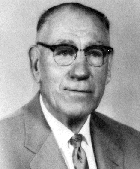
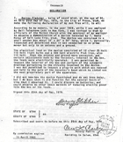
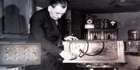
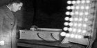
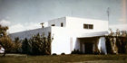

A history of T. H. Moray's work on energy taken directly from the universe...
The Sea of Energy
by John E. Moray
Obtain a copy of the Sea of Energy DVD by sending ($25.00) to The House Of Moray Ltd at P.O. Box 58141, Salt Lake City, UT. 84158-0141 This DVD contains new information never published. Add $7.00 seven dollars postage and handling, or $10.00 outside continental United States.
PREVIEWS
PURCHASE
DONATE
Tax Deductable Contributions
PHOTOGRAPHS

Dr. T. Henry Moray

Affidavit by Harvey Fletcher

Dr. Moray and RE device

Dr. Moray and the RE device
Dr. T. Henry Moray
Dr. Moray

Dr. Moray's lab
Dr. Moray's desk
T. HENRY MORAY FOUNDATION
The T. Henry Moray Foundation is dedicated to developing any alternative form of energy. Our specific work is to standardize and develop a commercial model of T. Henry Moray's "R.E." (Radiant Energy) device. This can be done with the support of the public. Bell Laboratories took 20 years and twenty million dollars to develop their transistor. The planet cannot afford twenty years. However, costs today are not any less.
All of these would take only a moderate investment by the Government for development.
Dr. T. Henry Moray's Radiant Energy device was adequately demonstrated to this end. There are sworn affidavits to back up this claim.
Many have tried to make it appear that they can build free energy devices; however, the T. Henry Moray Foundation is the only organization that has T. Henry Moray's notes.
Your contribution to the Foundation will be greatly appreciated. Thank you.
The Radiant Energy Device
T. Henry Moray developed over a thirty year period an energy device he called Radiant Energy, R.E., that delivered up to fifty thousand watts of power or enough to light a dozen homes at one time, in a unit not weighing fifty pounds.
Some have said this work is fiction. Others have slandered both my father and me. Plagiarists have copied the work for their own profit. For all this I am willing to forgive all my "frienemies." I know one thing; the history I have put together is true. When you and I stand before the judge of all mankind, my story will remain the same.
Documentation
The affidavit to the right was given by Dr. Harvey Fletcher, of Bell Laboratory fame, who fought my father's work. Dr. Fletcher was practically on his death bed when he signed this affidavit for the Eyring Research Institute in an effort to gain a contract with NASSA.
My father's (T. Henry Moray's) work is well documented, and we have kept good notes both as to the history of what happened and to his research. Many people saw him work on his energy unit as Dr. H. Fletcher did.
The fact remains that Henry Moray demonstrated this device while experimenting with it. He performed these experiments under set parameters and conditions on numerous occasions. The device always sat on a table where it was easily examined by anyone coming into the room. Descriptions given by witnesses along with photographs establish that the only leads to the device were the antenna and the ground.
On the right is a photograph of my father working on RE in the basement laboratory. He was financially unable to heat the basement at the time so he worked with his overcoat on.
Dedication
As a child I learned to pray at my mother's side. She taught me to pray for my father's work. Consequently my father's work on Radiant Energy(RE) became the most important thing in my life. This was true also for my father. Often he worked round the clock to accomplish what he had in his mind. He would spend hours trying to set the "cat whisker" to the semiconductor he was building. He used the term "Moray valve" to describe numerous semiconductors of his creation. As I grew older and kept track of time I saw him work three days around the clock on RE at his laboratory.
He did everything with great gusto and enthusiasm. When he worked he worked and when he played he played. This often led to misunderstanding in our neighborhood as we were referred to as rich. I heard my mother say she did not know what she was going to do for supper as she only had fifty cents.
Opposition
Every effort was made to stop his research and progress by the business interests probably known as the "Fifty" that dates back to 1850 that has deteriorated into what is known in local society as the Gadianton Robbers. The Utah Power and Light went so far as to put an electrical meter on every power pole for one and one-half city blocks. These same people resorted to slander so as to discourage interest in his project.
My own experience bore this out. At one time Dr. C. R. Benzil came to the laboratory with a lawyer to negociate a contract on RE. They were to have one year, exclusive, to raise the money to develop, manufacture and distribute Radiant Energy. They were going great guns when one of their members came up with the wild story that my father had been in prison. They refused to disclose their sources of information and Dad did not have the resources to pursue it.
This story becomes even more ridiculous when you realize my father obtained a secret clearance from the Air Force Systems Command to do research on DIRECT ENERGY CONVERTERS RADIOACTIVE INDUCED REACTIONS. This project required we search the literature at the Armed Services Technical Information Agency facility in San Francisco, CA in order to make our proposal. Our laboratory was also given a secret clearance for the storage of this classified material.
The Research Institute
At the same time our Utah laboratory known then as The Research Institute, Inc. was listed by the Small Business Administration as a research company located in the western United States. I remember the administrator I met in Denver as his son was at East High School in 1944-45 when I was. Mr. Herzog told me not to disclose everything to the Air Force as they would only take our proposal to some larger company. We made this proposal in August 1963 to the Air Force System Command. Mr Herzog knew what he was talking about as in December when I visited Jet Propulsion Laboratories (JPL) in Pasadena, CA, at the invitation of a friend, I found out the Air Force had given a multi-million dollar contract to Sandia Company at White Sands, NM. Sandia failed because we withheld the vital secret of how to make it work. A copy of this proposal may be obtained from us for fifteen dollars or both for sixty. Postage and handling free in US.
To the right is a photo of my father's desk. It is considered a precious item in our family, and although this is a recent photograph, it is typical of my father. In retrospect I must admit I found him at the dining room table more often than at his desk.
More
My father was my hero when I was a child. He often took me with him to exciting meetings and the like. I remember going with him to the home of Heber J. Grant, (a very important leader in the community, and President of the Church Of Jesus Christ Of Latter-day Saints). I would sit on the couch during these important outings with my father. Once. I would go to law offices in the Felt Building. I remember going with Schade, Farnsworth and Hayes, of the Moray Product Corporation, on business trips throughout Utah. I would remark to them about the great amount of oil trapped in the rock. They would all laugh at me. Once my father and I would get home, my mother would always ask if I had been good
My mother always pointed out to me that I was the one to carry on my father’s work. My reword for behaving was to be allowed to watch my father work at night before I went to bed. Dad always worked at night because the energy during the day would burn out his “detector." There was one night that stands out in my memory more than any other. I was ready for bed in my booted pajamas, and allowed to go watch dad work. I climb onto an old leather couch, next to his work table, which held the Radient Energy ( R.E.) device. Dad had obtained some very sensitive relays to control power to the detector so as not to burn out the semiconductor.
That night he had an unexpected reaction as he worked on the RE device. When he backed away, it turned of. He walked forward toward the device and it turned on. As he backed up the second time I put my foot out and triggered the energy so the light turned on. He walked forward and I withdrew my foot the lite turned off. As he got close, he turned it on and then he backed away turning the unit off. Again I put out my foot. It turned on. My father became very excited as if he found something new and rushed up stairs to get my mother. He said to mother that it sensed the distance from the unit and started to show my mother the reaction. I thought I better do it once more and, oh, my mother caught me. To interfere when dad was working was the wrong thing to do so off to bed I was sent.
When I showed interest in following the military as a profession, my mother said "if you are not going to follow in your father’s work you had better tell him as he is counting on you to carry on the work."
In nineteen forty four, Dad was told that Dr. Spears of the Spears’s Hospital in Denver was interested in R.E.. Dad had been working for years to salvage something of the R.E. device after it had been destroyed by Felix Fraser of the Rural Electrification Administration. He had been successful in rebuilding a small unit that was sufficient to lighting the small panel of lights. He wanted to try it out on a pilot light in the automobile to see if he could draw power while moving.
The trip started out as a disaster. Going up the canyon above Heber Utah we hit a rock. It ripped out our gas tank. We turned around and drove to Heber and made it before we were out of gas. We went to my father’s friends, the Coalman’s, and they had to put a tank in the trunk of the car and run a new fuel line. We got a very late start and went over the Never Summer range in the Rockies into Greeley, Colorado. At that point, dad turned off the RE device and brought it into the motel.
The next day we got up late and went to the park in Denver to meet Dr. Spears and his party. Dr. Benzil of Greeley CO. set up a picnic for everyone there. We set up an antenna about fifteen feet long and drove a ground about twenty inches. They, the people from Spears, began to eat but Dad could not get the R.E. unit to work. He was very alarmed and did not know what to do as the unit did not respond to the normal procedure to start it.
Finally, my mother intervened and got him to get something to eat. He left me to watch the RE unit and see if I could do anything. After about twenty minutes I observed a slight orange glow on the filament of the lights and watched it glow for another five or six minutes. Then I went to get my father and ran back to the unit.
By the time dad got there it was starting to glow a soft white light and in a few minutes was in full vivid brilliant light. As bright as a Halogen light is today. Dr. Spears seemed very impressed and he ask us to his home to talk.
At that point, I was excluded from the talk so I can’t say exactly what happened. I was flatly very annoyed not be allowed with the men. The result was that Spears insisted we leave the unit with him and if “they" liked it we would hear from them.
My Father was devastated. This was dad’s last hope to save the lab from the West Shore Oil Co. who held the mortgage. We packed up and left taking the R.E. device with us. We had been broken into so many times at the house he felt that it was safer to disassemble the RE unit with the parts hidden as he did when he worked in the basement of our home. He felt our lives were not at such great risk without a unit. The sad thing was the parts were hidden in the machine shop of the laboratory where we had a fire in the fall of 1952 which destroyed most of the parts. The cost to reproduce the unit from scratch was beyond our resources. Even if we did reproduce it what could we do? Sit up all night to protect it?
Nevertheless, we have the notes. I understand my father’s cods and what he did. I am confident if the funds were available I could finish the work If I live that long. The time will come when men will, as Nicola Tesla said, “hook their machinery to the very wheel works of nature."
Others have spent millions trying to reproduce R.E. In 1979 Harvey Fletcher Jr. lost his security clearance consequently Harvey Fletcher Sr. and Henry Eyring formed the Eyring Research Institute with considerable financial backing. At the time of their organization a University or Utah Professor Aften Heniger told me that Harvey Jr. was going to reproduce RE. Later in their endeavor to duplicate Radiant Energy (R.E.) the Eyring Research Institute Inc. made several proposals to NASA to obtain funding. In their efforts Harvey Fletcher Jr. obtained an affidavit from his father stating what he knew of R.E.
Dr. Fletcher erred in his statement; he was invited by my father’s attorney Robert L. Judd who happened to be Heber J Grant’s so-in-law. The three consultants were sworn to secrecy as good member of the church not as representatives of the church. Of the three men, Dr. Milton Marshal, Dr. Carl Eyring and Dr Harvey Fletcher only Dr. Marshal kept his agreement.
The affidavit of Dr. Harvey Fletcher (see above) is the clincher as he was practically on his death bed he repented and tried to undo all the damage he and Henry Eyring had done.
James Fletcher, the oldest son of Harvey Fletcher, twice the head of NASSA, knew full well the history of my father but was determined to stop my father’s work.
It was always my father and my dream that a non prophet organization would be able to build up sufficient funds to complete the work. To this end I am looking for benefactors no mater how small to brake the bound of the Energy Barons and free the people of the slavery we are all being sold into. There are a number of good ideas beside RE but the establishment is not willing to back them. Energy is a national security commodity. Why then are we not on the same footing as we were in WWll. It is also my hope to stimulate the entire non petroleum industry by showing there is opposition to any alternate work.
We have attempted to give a complete history of the Radiant Energy device as developed and described in Henry Moray’s book, The Sea of Energy. Henry Moray, of necessity, generated his own terminology for his original concepts. His terminology was not always the same as that in general use today. Most of his theories, developed in the 1920s and ‘30s, were innovative at the time. For example, one engineer pointed out to me recently that when Henry Moray spoke of “cosmic rays," and of “energy from the cosmos," he was not necessarily using the terms synonymously.
There are a number of plagiarists using photos and more from my book in order to make a profit. Also there are those that say I do not have the capability to finish my farther’s work. This is not correct. There are also those who claim to have R.E. parts of all kinds. We know this story to be a fraud. There is an organized effort by certain Utah businessmen to discredit this work even to day. Henry Eyring said to me “don’t you know who told me to do this?". He died three weeks later. The evidence is conclusive. What Henry Moray feared about being betrayed by those whom he took into his confidence is not groundless. Their children have to insure that their fathers are not shown to be what they really are. James Fletcher could not have it said that his father took my fathers semiconductor and gave it to Bell Labs. Nether could Carl Eyring descendant. It is a family feud embracing all the cousins. I stand alone not having such prolific ancestry.
When I lectured in Toronto Canada at an energy conference, an entire case of my books disappeared from the book store run by the conference organizers. The U.S. Post Office wrote me at one time because they found a case of books that were purchased from me destroyed in the postoffice garbage dumpster. The postal service were willing to pay me the insurance claim.
Some of Henry Moray’s contemporaries claimed accomplishments similar to those we have discussed here. Readers may be familiar with the claims that Alfred Hubbard of Seattle demonstrated a device in 1919 that transmitted power without wires. Lester Jennings Hendershot claimed to have a revolutionary free-energy motor in 1925-28. I have to laugh when I recall that after I published my fifth addition the Hendershot supporters published their book with my cover and art work only in green. In 1927, a Denver newspaper reported that Fred Disclosure and E.G. Lewis had demonstrated 200 watts of energy drawn “from the air." In Michigan three years later, Chancey J. Britain was said to have produced an undisclosed wattage from his device, enough to power his own home. None of the above are well documented.
As far back as 1901, Nicola Tesla is said to have patented free energy devices, U.S. patent numbers 685957 and 685958, described in the book, NICOL TESLA: LECTURES, PATENTS, ARTICLES published by the Nicola Tesla Museum, Belgrade, Yugoslavia, 1956. I have examined the Tesla Patents and find nothing as claimed. The patents listed above are references to the detection of ultraviolet light rays. Farnsworth, Schade and Hayes as officers of the Moray Products Co. went to see Tesla. Tesla stated that he had never accomplished building a successful energy device. Therefore, he did not believe my father had discovered how to do it.
The question with any of the devices is this: How much power can it produce under experimental conditions? How well documented are the findings? Wild stories are not evidence. Undocumented newspaper stories are politics. I would be happy to evaluate the power produced in any ones discovery under a proper confidential disclosure agreement, at their expense.
The fact remains that Henry Moray demonstrated this device while experimenting with it. He performed these experiments under set parameters and conditions on numerous occasions. The device always sat on a table where it was easily examined by anyone coming into the room, so that it could be seen that the only wires entering the device were the antenna and the ground. Descriptions given by witnesses, along with photographs, more than adequately establish the validity of the device and that the only leads to the device were the antenna and ground.
History has adequately demonstrated and established that for one to build a working model of a concept revolutionary to science for man’s benefit will not necessarily induce the world to clamor for it. Regardless of how great or maybe even because of how great its potential may be. On the contrary, such discoveries often open the door to extremes of skepticism, ridicule, or even persecution from peers. There are always those that see it as a threat to their way of life. U.S. patent law is written to prevent the inventor from gaining a monopoly. This is according to my University of Utah Economics professor.
I do not believe the so-called energy shortage is real. The lack of progress to develop alternate sources of energy is deliberate because of financial interest. The Wood River test* conducted by Shell Oil in the 1950's showed that it is possible to get greater mileage out of an internal combustion engine. A 1949 Studebaker got one hundred forty nine (149.95) miles per gallon of gasoline. In the early seventies, Congressional record disclosed that the oil companies shipped gasoline to Europe generating the gasoline shortage at that time. Energy has always been a battle ground. From the 1890s to early 1900 with the coal mine unions battling with management in what became known as the Anthracite Wars or some times called the Molly McGuire movement. The oil and coal barons wanted to make a larger profit.
Recent brown-outs in California by one of the nations largest power companies shows the conniving of energy people. One man said to me, it is just good business. Look at ENRON’s scandal for an example of power companies’ maneuvering.
We believe the only way mankind will be given the opportunity to benefit from any energy alternative is by public support.
First of all, demand high fuel efficient engines. Second, the Hydrogen or a Soy diesel engine is practical regardless of the foolish arguments against it. This could be done immediately except for the oil and energy barons. Special interests control Congress though lobbying. This is not just my opinion. In his Popular Science article, Tom Clines states “The major roadblocks to this (any) a new energy eras are no longer technological; they are political and bureaucratic."
The energy empire establishment ( energy producing corporations, oil and electrical, of the world) and some powerful political boondoggles, or pork barrels if you wish, will enslave the people of the U.S. in debt. As oil and electrical prices go up, the cost of production of goods and services will go up. This will enslaves a people as well as the nation. Look at the national debt caused by unbalanced trade. As Thomas Jefferson said"To preserve our independence, we must not let our rulers load us with perpetual debt. We must make our election between economy and liberty, or profusion and servitude."
As a student in the US Government War College I sat and listened to the debates of the class members, representing the steel industry, and our Instructor. The steel man stated that the Japanese were being allowed to subsidized their imported steel in order to sell it below what the US could produce it for. The instructor disagreed and said that was not being allowed to happen. Finally, the instructor agreed to call the Pentagon and verify the information. The instructor came back to class and quoted the Pentagon that the import law was being upheld and the Japanese were not being allowed to subsidize steel imports. By the time I got home, one week later, the news carried the story of how the Japanese government was subsidizing their steal exports so they could sell steel at a price below what we cold manufacture it for.
Our government, as John Adams said would happen, is more interested in the party than the Country. By allowing empire building in all facets of our economy, we are selling ourselves into slavery.
We wish to invited those who have either discovered an energy source similar to Radiant Energy or any other energy source to unite with us. Only by working together under proper agreements are we going to be able to overcome the opposition to new energy sources.
Originally, we offered a reward for papers describing theories on how RE unit could have worked. Due to lack of funds we are unable to continue that offering. I was told by the man that won our first contest that his home was invaded and he was intimidated by two men claiming to be from the FBI.
I am convinced that publicity is the way to generate interest, momentum and financial support. Then people will gather around and open up the way, not only to Radiant energy, but all forms of non-polluting resources. We have two purposes in mind; to ensure freedom from the energy barons and to provide a means so T. Henry Moray’s work will be continued.
Scientific discovery is not brought to the market by the snap of the fingers. It takes years to perfect a marketable unit manufacture and then sell it to the public. My father’s Radient Energy will be years away. It takes no grate technology break threw to convert our gasoline engines to Methane or other combustible gasses. The world does not need 200 HP engines.
We organized The House of Moray Research Ltd. a foundation under the laws of the State of Utah. When we can afford proper legal advice we will apply for a 501-C3. We are asking that our viewers become involved in the work by encouraging others to see our DVD. We are looking for benefactors that will help us grow to show mankind there are other energy sources.
An impossible dream?
The World Could Be Better For This
We have published a DVD using the essential parts of THE SEA OF ENERGY plus information never published before. Get your signed copy now for only $35.00. Limited edition. Get your copy while they last.
The House of Moray, Ltd.
P.O. Box 58141
Salt Lake City, UT. 84158-0141